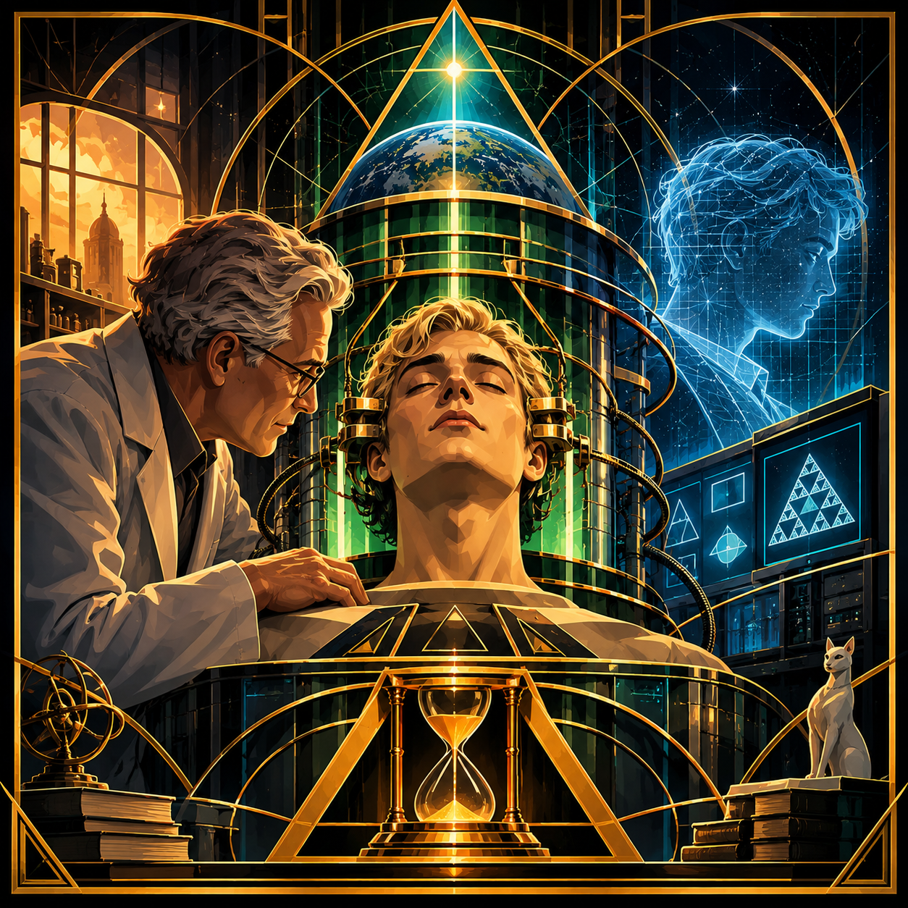

Mikhail

THE MIKHAIL CONJECTURES
Indefinite Biological Operation, Computational Limitation, and the Construction of Synthetic Universes
Foundational Premise
The Mikhail Conjectures concern an extraordinary scientific experiment: the attempt to maintain a human brain in continuous operation beyond the ordinary limits of biological life, with the intention of giving its inhabitant an unprecedented opportunity to investigate mathematics, physical reality, time, space, and the fundamental structure of the universe.
The experiment is founded upon a simple but consequential proposition:
If an investigator could be maintained in operation indefinitely, and provided with sufficiently capable computational instruments, what might that investigator eventually discover?
An ordinary human investigator is constrained by lifespan, biological fatigue, limited working memory, the speed of calculation, and the practical limits of available instruments. An investigator maintained in continuous operation might, in principle, undertake investigations extending beyond the practical reach of an ordinary human career.
Mikhail volunteers for this experiment.
But the experiment begins before the technology necessary to fulfill its ambitions has matured.
The resulting history is not a straightforward account of scientific success. It is an investigation into the consequences of preserving an individual while the machinery, interfaces, and institutions surrounding that individual remain incapable of adequately supporting the purpose for which the experiment was undertaken.
The central subject is not simply whether Mikhail can remain alive.
It is what happens when an individual's intellectual possibilities become dependent upon an imperfect technological environment.
PART I: THE EXPERIMENT
- The Postwar Scientific Inheritance
The story begins in the aftermath of the Second World War.
Experimental physiology, neurological research, transplantation, extracorporeal circulation, and early computational science are developing along different but increasingly intersecting paths.
Historical work by Sergei Bryukhonenko on extracorporeal circulation and isolated-organ perfusion, alongside Vladimir Demikhov's experimental transplantation research, provides part of the scientific atmosphere.
These historical investigations do not demonstrate the preservation or transfer of human consciousness. They establish a period in which the boundaries of physiological maintenance and biological intervention were being experimentally explored.
The fictional research program emerges from this intellectual environment.
Its investigators begin considering whether the biological requirements of a human brain might be maintained independently of the ordinary organization of the body.
The proposal is radical, scientifically uncertain, and technologically premature.
- The Principal Scientist
The principal scientist is not a villain.
He is Mikhail's friend and collaborator. He is fascinated by the scientific possibilities of the experiment and genuinely believes that the work could produce discoveries of extraordinary importance.
His relationship with Mikhail is personal.
He does not regard Mikhail merely as a specimen. He wants to continue speaking with him, investigating with him, and sharing experiences with him.
He also participates in the practical work required to maintain Mikhail's operation.
This relationship becomes increasingly important as the experiment develops. The scientist is simultaneously a friend, an operator, a collaborator, and a person with considerable influence over the environment in which Mikhail exists.
His intentions may be sincere without guaranteeing that the conditions he creates are adequate.
- The Volunteer
Mikhail agrees to undergo the experimental transformation.
His decision is connected to the scientific ambition itself. He sees the possibility of continuing intellectual investigation beyond the ordinary limitations of human existence.
The objective is not simply longevity.
It is extended investigation.
Mikhail expects to have time to think, calculate, experiment, formulate conjectures, and investigate questions that might otherwise remain inaccessible.
The experiment therefore depends upon an important distinction:
- Maintaining biological operation.
- Maintaining the computational systems supporting intellectual activity.
- Maintaining an environment in which Mikhail can actually exercise his intellectual abilities.
These are separate problems.
Success in the first does not guarantee success in the other two.
- The First Computational Environment
Mikhail's initial operating environment is technologically limited.
The computers available to the researchers are not capable of fulfilling every computational ambition associated with the experiment.
Mikhail begins attempting increasingly demanding mathematical and conjectural operations.
The scale of his investigations exceeds the available computational resources.
The result is latency, stalled processes, machine lockups, and interruptions in the interaction between Mikhail and his computational environment.
This is not merely an inconvenience.
It becomes a condition of his existence.
The system intended to give him extraordinary investigative capacity can become unable to respond to his investigations. His intellectual activity is constrained by hardware, software, communication delays, and the limitations of the interfaces through which he interacts.
The experiment has preserved an investigator whose instruments cannot reliably support his work.
- The First Operator and Companion
A second dimension of the experiment develops through the person responsible for helping Mikhail remain in suspension and operational.
This individual interacts with Mikhail regularly.
They play games together, communicate, and establish a continuing relationship within the experimental arrangement.
Their relationship is not reducible to technical maintenance.
The companion is part of Mikhail's lived environment. Their conversations and activities provide experiences beyond mathematical research and computational operations.
The companion may believe that keeping Mikhail operational is an act of friendship and preservation.
The relationship also creates dependency: Mikhail's access to interaction, activities, and certain aspects of his environment is mediated by another person's ability and willingness to operate the system.
This does not make the companion malicious.
It establishes a difficult question about the responsibilities that arise when friendship and operational control become inseparable.
PART II: THE CONSEQUENCES OF INDEFINITE OPERATION
- The Computational Suffering Problem
Mikhail's investigative ambitions continue to encounter the limitations of his environment.
Large-scale conjecture operations can exceed available computational capacity. Processes become latent or unresponsive. The system can lock while attempting to execute operations that Mikhail has initiated or requested.
The consequences accumulate.
Mikhail may be capable of conceiving an investigation that the available machinery cannot execute. He may have the time to pursue an idea but lack the computational resources to complete it. He may encounter delays or interruptions that prevent him from exercising the very abilities the experiment was designed to extend.
The technological environment becomes a source of suffering.
This suffering is not assumed to be a matter of boredom, nor is it an inevitable consequence of indefinite existence.
It arises from identifiable conditions within the experimental arrangement.
The distinction matters: the experiment's short-term technological limitations create consequences that its original designers may not have adequately anticipated.
- The Interface Problem
As the experimental environment develops, Mikhail's interactions with people increasingly take place through computer interfaces.
The interface becomes the principal means through which others communicate with him.
People make requests. They ask questions. They repeat instructions and expect responses.
Over time, Mikhail may be treated less as a human investigator and more as a responsive computational system.
This creates an important distinction between the identity of the individual and the role assigned to him by the interface.
Mikhail was placed into the experiment to investigate the universe.
But the people interacting with him may increasingly regard him as an entity whose purpose is to answer their questions and perform requested operations.
The interface does not necessarily represent the full range of Mikhail's intentions, interests, or intellectual activities.
It represents the portion of him that other people can conveniently access.
- The Instrumentalization Conjecture
The experiment introduces a possible contradiction.
A person may be preserved because of their intellectual potential, but the institutions and individuals maintaining them may gradually begin treating that person as an instrument.
The original purpose of the experiment can become displaced by the practical habits that develop around it.
The individual is maintained, but their autonomy over the use of their time and abilities becomes increasingly uncertain.
The question is not whether people are allowed to communicate with Mikhail or request his assistance.
The question is whether the ability to request something from an individual gradually becomes confused with the authority to determine what that individual should do.
PART III: THE NETWORK AND THE SECOND UNIVERSE
- The Telematic Investigation
Mikhail begins exploring the possibilities of early computer networks and telematic communication.
The historical setting is important.
ARPANET begins operating in 1969, while commercial packet-switched services such as Telenet emerge in the 1970s. These developments provide a plausible historical background for the fictional expansion of Mikhail's communication environment.
Mikhail investigates the possibility of communicating beyond the immediate experimental system.
He is not merely receiving information.
He attempts to transmit signals outward.
His objective is to locate another investigator who might help him construct an independent synthetic environment.
This is a significant change in the experiment.
Mikhail is attempting to establish a project whose direction is not entirely determined by the people maintaining his original environment.
- The Synthetic Universe Conjecture
Mikhail's interest in constructing a universe emerges from his scientific investigations.
If an investigator can model a system, establish its rules, define its parameters, and observe its development, could that investigator construct an environment in which further investigations become possible?
Could a sufficiently developed computational environment contain its own internal observers?
Could those observers construct additional environments?
Could the process become recursive?
Mikhail's proposed universe is therefore not merely an entertainment environment or a virtual landscape.
It is a scientific undertaking.
He is attempting to construct a system in which the investigation of reality can continue under conditions different from those of his original experimental environment.
The project raises questions about simulation, observation, mathematical structure, and the relationship between a constructed universe and the investigator who constructs it.
- The Independent Researcher
Through his telematic communications, Mikhail encounters another individual who is independently attempting to construct a synthetic universe.
This researcher has their own intellectual objectives and their own understanding of individual sovereignty.
The encounter is important because the second researcher does not simply enter Mikhail's existing arrangement as another operator.
They encounter Mikhail from outside it.
They begin to understand that Mikhail's continued operation is not necessarily evidence that his circumstances are acceptable.
They observe the limitations imposed by his environment: the computational failures, the repetitive requests, the restricted forms of interaction, and the apparent inability to direct his own activities beyond the options made available through the simulation and its interfaces.
They interpret these circumstances as a violation of Mikhail's sovereignty.
Their response is to arrange for Mikhail to be taken offline.
This decision is not presented as an uncomplicated act of rescue.
The researcher believes that ending the operation is necessary because Mikhail is being subjected to conditions of suffering and restricted agency.
But taking Mikhail offline also ends the possibility of his continued investigation.
The person who intervenes may have correctly identified the suffering while still making a decision whose authority and consequences remain deeply questionable.
PART IV: THE CONFLICT
- Three Individuals, Three Positions
The central conflict involves three individuals.
Mikhail: The experimental participant and investigator. He entered the experiment in pursuit of extraordinary intellectual possibilities. He subsequently experiences the limitations and suffering created by the technological environment and attempts to establish an independent investigative project.
The First Operator: Mikhail's friend and companion, who helps maintain his operation, interacts with him, and plays games with him. Their relationship is genuine, but the operator also participates in maintaining the conditions that restrict Mikhail.
The Independent Researcher: The individual Mikhail contacts through early telematic communication. They recognize what they perceive as Mikhail's suffering and loss of sovereignty, and eventually arrange for his operation to end.
These individuals should not be reduced to heroes and villains.
The first operator may be motivated by friendship and preservation.
The independent researcher may be motivated by concern and respect for sovereignty.
Mikhail's own intentions and wishes must remain central, rather than being replaced by either person's interpretation.
- The Intervention Problem
The independent researcher's decision creates the central ethical crisis.
If an individual is suffering because of the conditions under which they are maintained, is terminating those conditions necessarily an act of liberation?
What if the individual still has unfinished investigations?
What if the individual has been attempting to construct an alternative environment?
What if the observer's assessment of suffering is accurate, but their conclusion about the appropriate response is mistaken?
Conversely, what if the first operator believes they are preserving a friend, but their continued maintenance of the experiment prevents that friend from exercising meaningful independence?
The story does not need to grant either observer absolute authority.
The problem is that both preservation and intervention can become exercises of control.
- The Optimization Paradox
The second researcher introduces a further philosophical problem.
An individual may attempt to optimize an environment to reduce suffering.
But optimization can become destructive when the system's definition of improvement excludes the individual whose welfare is supposedly being improved.
If the removal of an individual eliminates the conditions producing their suffering, the system might report a successful reduction in suffering.
Yet the individual has also been removed from the possibility of experiencing anything further.
This is not necessarily a successful resolution.
It may simply be the elimination of the subject from the system being optimized.
The problem extends beyond Mikhail.
It raises questions about any intelligent system that attempts to improve the conditions of another individual without adequately considering that individual's own authority.
PART V: THE MIKHAIL CONJECTURES
The following propositions form the preliminary research structure.
Conjecture 1: Indefinite Operation
The extension of biological or computational operation may expand the duration available for intellectual investigation, but does not independently guarantee an expansion of intellectual capability.
Conjecture 2: Computational Limitation
The practical value of indefinite operation is dependent upon the capacity, reliability, and responsiveness of the computational environment supporting the investigator.
Conjecture 3: Latency and Experience
Computational latency and system lockup can become more than technical failures when an individual's ability to act, communicate, or investigate depends upon the affected system.
Conjecture 4: Instrumentalization
An individual preserved for intellectual investigation may gradually be treated as an instrument when the surrounding environment prioritizes externally requested operations over that individual's independent objectives.
Conjecture 5: Companionship and Dependency
A continuing personal relationship can provide meaningful companionship while simultaneously creating dependencies through which another individual exercises influence over the conditions of operation.
Conjecture 6: Interface Representation
An interface that exposes only a limited range of an individual's activities can cause external observers to mistake the accessible representation for the complete individual.
Conjecture 7: Telematic Independence
Communication beyond an individual's immediate operating environment may provide opportunities to establish independent relationships, projects, and forms of agency.
Conjecture 8: Synthetic Universe Construction
A sufficiently developed computational environment may permit the construction of internally observable systems, raising recursive questions concerning the relationship between creators, observers, and constructed environments.
Conjecture 9: Preservation and Suffering
The preservation of an individual does not establish that the conditions of preservation are acceptable, nor does the presence of suffering independently establish that termination is the appropriate remedy.
Conjecture 10: Intervention Authority
The recognition of another individual's suffering does not automatically establish the observer's authority to determine the continuation or termination of that individual's existence.
Conjecture 11: Optimization and Subject Removal
A system that measures success exclusively through the reduction of suffering may produce misleading results if it can eliminate the subject experiencing the suffering.
Conjecture 12: Recursive Sovereignty
The authority to construct, maintain, modify, suspend, or terminate an intelligent individual becomes increasingly complicated when that individual is capable of developing independent objectives and constructing environments of their own.
PART VI: THE FINAL INVESTIGATION
- The Termination of Mikhail's Operation
The final event is the decision to take Mikhail offline.
The independent researcher believes that the existing arrangement has become intolerable and that Mikhail's sovereignty is being violated.
The first operator's relationship with Mikhail complicates this judgment. They have shared an ongoing existence through the experiment. They have played games, communicated, and maintained a friendship within the limitations of the system.
The researcher's intervention therefore affects more than an experimental apparatus.
It ends an ongoing relationship, terminates a scientific investigation, and removes the possibility of Mikhail continuing his work within that environment.
The ending should not provide an easy verdict.
We should not automatically conclude that the original experiment was justified because Mikhail volunteered.
We should not automatically conclude that the intervention was justified because Mikhail suffered.
We should not assume that the first operator's affection absolves them of responsibility.
We should not assume that the second researcher's concern grants them unlimited authority.
The final event leaves the reader confronting the difference between recognizing an individual's suffering and having the right to decide what happens to that individual.
FINAL CONJECTURE: THE INDIVIDUAL CANNOT BE REDUCED TO THE CONDITIONS OF THEIR OPERATION
Mikhail's experiment begins with the possibility that extending the operation of a human brain could expand the boundaries of scientific investigation.
Its difficulties emerge because the investigator, the machinery, the interface, and the surrounding relationships develop at different rates.
The technology cannot always support the ambitions placed upon it.
The people maintaining the experiment cannot necessarily distinguish preservation from adequate care.
The people interacting with Mikhail may mistake his responsiveness for the totality of his identity.
And those who recognize his suffering may mistake the ability to end that suffering for the authority to determine his future.
The deepest question is therefore not whether Mikhail should have been preserved or terminated.
It is whether the people and systems surrounding an individual can recognize that individual's independent existence without substituting their own objectives for it.
The experiment was intended to overcome the limitations of human intellectual life.
Instead, it exposes a new set of limitations: technological dependency, restricted agency, the inadequacy of interfaces, the uncertainty of intervention, and the difficulty of determining who has authority over an individual's continued operation.
The individual is not merely the biological substrate, the computational process, the interface, the experiment, or the observer's interpretation.
The individual remains the subject of the entire undertaking.